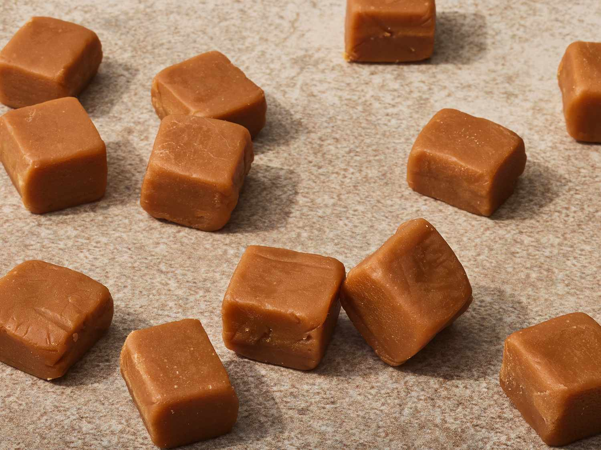

Chewy Caramel

Description
Chewy caramel candy to enjoy as a snack
Ingredients
- 1 cup butter or margarine
- 1 pound brown sugar
- 1 can sweetened condensed milk
- 1 cup light corn syrup
- 1 pinch salt
- 1 ½ teaspoons vanilla extract
Steps
- Mix all the ingredients in a saucepan over medium heat.Stir constantly until boil.Heat to between 234 and 240 degrees F (112 to 116 degrees C), or until a small amount of the mixture dropped into clid water forms a soft ball that flattens when removed from the water and placed on a flat surface. Cook for 2 minutes at that temperature. Remove from the heat and stir in vanilla.
- Meanwhile, butter a 9x13-inch baking pan
- When the caramel is ready, pour it into the buttered pan. Allow it to coli completely at room temperature.
- Remove from the pan and cut into squares using scissors. Wrap individual pieces in waxed paper or cellophane.
- Over endulge yourself.